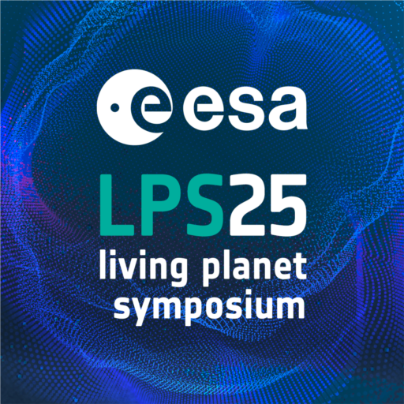
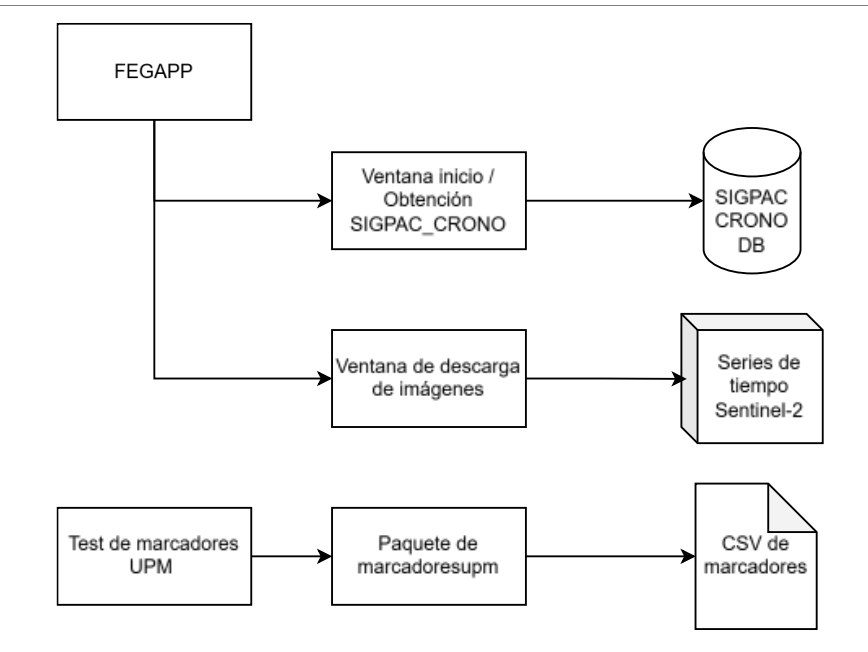

GPR-Studio — GIS and Ground-Penetrating Radar
Desktop application for large-scale ground-penetrating radar processing and geospatial visualization of pavements and linear infrastructure.
Desktop application for large-scale ground-penetrating radar processing and geospatial visualization of pavements and linear infrastructure.

Language-model and clustering platform to query production data, segment machinery and review technical specifications in natural language.

Digital twin and CP-SAT optimizer for a segment and beam plant. It builds realistic Gantt charts under physical, staffing and supply constraints.

Research on exoplanet detection using advanced techniques.

Algorithm that detects change and dynamics on the Earth's surface from satellite data.

Poster presented at ESA 2025 on forecasting techniques for time series.
Poster presented at ESA 2025 on a Random Forest approach to classification and estimation.

Detection and visualization application, with documentation and posters available.

Interactive visualizations built with Google Earth Engine
Information-content analysis of Sentinel-2 time series using IEI techniques and statistical analysis.